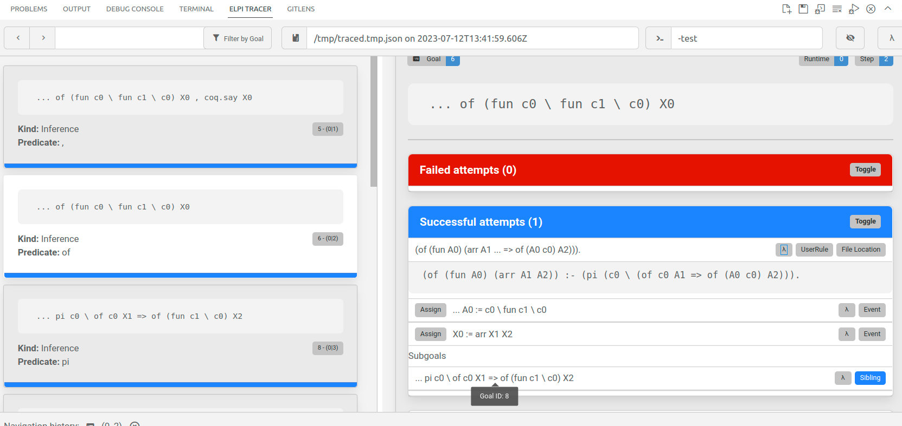

The Elpi programming language
See also
An Alectryon-rendered version of this tutorial, from before its migration to this manual, is also available.
This little tutorial does not talk about Rocq, but rather focuses on
Elpi as a programming language. It assumes no previous knowledge of
Prolog, λProlog or Elpi. Rocq is used as an environment for stepping trough
the tutorial one paragraph at a time. The text between lp:{{ and }} is
Elpi code, while the rest are Rocq directives to drive the Elpi interpreter.
- Set Warnings "-elpi.linear-variable".
- From elpi Require Import elpi.
- [Loading ML file ppx_deriving.runtime (implicit dependency) ... done] [Loading ML file re (implicit dependency) ... done] [Loading ML file re.str (implicit dependency) ... done] [Loading ML file elpi.util (implicit dependency) ... done] [Loading ML file elpi.lexer_config (implicit dependency) ... done] [Loading ML file menhirLib (implicit dependency) ... done] [Loading ML file stdlib-shims (implicit dependency) ... done] [Loading ML file elpi.parser (implicit dependency) ... done] [Loading ML file camlp-streams (implicit dependency) ... done] [Loading ML file easy-format (implicit dependency) ... done] [Loading ML file biniou (implicit dependency) ... done] [Loading ML file yojson (implicit dependency) ... done] [Loading ML file atdgen-runtime (implicit dependency) ... done] [Loading ML file elpi.trace.atd (implicit dependency) ... done] [Loading ML file elpi.trace.runtime (implicit dependency) ... done] [Loading ML file elpi.runtime (implicit dependency) ... done] [Loading ML file elpi.compiler (implicit dependency) ... done] [Loading ML file elpi (implicit dependency) ... done] [Loading ML file rocq-elpi.elpi ... done]
Logic programming
Elpi is a dialect of λProlog enriched with constraints. We start by introducing the first order fragment of λProlog, i.e. the terms will not contain binders. Later we cover terms with binders and constraints.
Our first program is called tutorial.
We begin by declaring the signature of our terms.
Here we declare that person is a type, and that
mallory, bob and alice are terms of that type.
- Elpi Program tutorial lp:{{ data person. symb mallory, bob, alice : person. }}.
An Elpi program is made of rules that declare when predicates hold and that are accumulated one after the other. Rules are also called clauses in Prolog's slang, so we may use both terms interchangeably.
The next code snippet accumulates on top
of the current tutorial program a predicate declaration for age
and three rules representing our knowledge about our terms.
- Elpi Accumulate lp:{{ pred age -> person, int. age mallory 23. age bob 23. age alice 20. }}.
The predicate age has two arguments, the former is a person while
the latter is an integer. The arrow -> separates
inputs (none here) from outputs. We will explain later the difference
between inputs and outputs later.
Note
int is the built-in data type of integers
Integers come with usual arithmetic operators, see the calc built-in.
In order to run our program we have to write a query, i.e. a predicate expression containing variables such as:
age alice A
The execution of the program is expected to assign a value to A, which
represents the age of alice.
Important
Syntactic conventions:
variables are identifiers starting with a capital letter, eg
A,B,FooBar,Foo_bar,X1constants (for individuals or predicates) are identifiers starting with a lowercase letter, eg
foo,bar,this_that,camelCase,dash-allowed,qmark_too?,arrows->and.dots.as<-well
A query can be composed of many predicate expressions separated by ,
that stands for conjunction: we want to get an answer to all the
predicate expressions.
- Elpi Query lp:{{ age alice A, coq.say "The age of alice is" A }}.
- The age of alice is 20 Query assignments: A = 20
coq.say is a built-in predicate provided by Rocq-Elpi which
prints its arguments. You can look at the captured output above to see
the value for A.
Note
string is a built-in data type
Strings are delimited by double quotes and \ is the escape symbol.
The predicate age represents a relation (in contrast to a function)
and it computes both ways: we can ask Elpi which person P is 23 years old.
- Elpi Query lp:{{ age P 23, coq.say P "is 23 years old" }}.
- mallory is 23 years old Query assignments: P = mallory
Unification
Operationally the query age P 23 is unified with each
and every rule present in the program starting from the first one.
Unification compares two terms structurally and eventually assigns variables. For example for the first rule of the program we obtain the following unification problem:
age P 23 = age mallory 23
This problem can be simplified into smaller unification problems following the structure of the terms:
age = age
P = mallory
23 = 23
The first and last are trivial, while the second one can be satisfied by
assigning mallory to P. All equations are solved,
hence unification succeeds.
See also the Wikipedia page on Unification.
Since the first part of the query is successful the rest of
the query is run: the value of P is printed as well as
the "is 23 years old" string.
Note
= is a built-in predicate and can be used directly
The query age P 23 can be written as follows:
A = 23, age P A, Msg = "is 23 years old", coq.say P Msg
Let's try a query harder to solve!
- Elpi Query lp:{{ age P 20, coq.say P "is 20 years old" }}.
- alice is 20 years old Query assignments: P = alice
This time the unification problem for the first rule in the program is:
age P 20 = age mallory 23
that is simplified to:
age = age
P = mallory
20 = 23
The second equation can be solved by assigning mallory to P,
but the third one has no solution, so unification fails.
Backtracking
When failure occurs all assignments are undone (i.e. P is unset again)
and the next rule in the program is tried. This operation is called
backtracking.
The unification problem for the next rule is:
age P 20 = age bob 23
This one also fails. The unification problem for the last rule is:
age P 20 = age alice 20
This one works, and the assignment P = alice is kept as the result
of the first part of the query. Then P is printed and the program
ends.
An even harder query is the following one where we ask for two distinct individuals to have the same age.
- Elpi Query lp:{{ age P A, age Q A, not(P = Q), coq.say P "and" Q "are" A "years old" }}.
- mallory and bob are 23 years old Query assignments: A = 23 P = mallory Q = bob
This example shows that backtracking is global. The first solution for
age P A and age Q A picks P and Q to
be the same individual mallory,
but then not(P = Q) fails and forces the last choice that was made to be
reconsidered, so Q becomes bob.
Look at the output of the following code to better understand how backtracking works.
- Elpi Query lp:{{ age P A, coq.say "I picked P =" P, age Q A, coq.say "I picked Q =" Q, not(P = Q), coq.say "the last choice worked!", coq.say P "and" Q "are" A "years old" }}.
- I picked P = mallory I picked Q = mallory I picked Q = bob the last choice worked! mallory and bob are 23 years old Query assignments: A = 23 P = mallory Q = bob
Note
not is a black hole
The not(P) predicate tries to solve the query P: it fails if
P succeeds, and succeeds if P fails. In any case no trace is left
of the computation for P. E.g. not(X = 1, 2 < 1) succeeds, but
the assignment for X is undone. See also the section
about the Logical foundations of λProlog.
Facts and conditional rules
The rules we have seen so far are facts: they always hold. In general rules can only be applied if some condition holds. Conditions are also called premises, we may use the two terms interchangeably.
Here we add to our program a rule that defines what older P Q means
in terms of the age of P and Q.
Note
:- separates the head of a rule from the premises
- Elpi Accumulate lp:{{ pred older -> person, person. older P Q :- age P N, age Q M, N > M. }}.
The rule reads: P is older than Q if
N is the age of P
and M is the age of Q
and N is greater than M.
Let's run a query using older:
- Elpi Query lp:{{ older bob X, coq.say "bob is older than" X }}.
- bob is older than alice Query assignments: X = alice
The query older bob X is unified with the head of
the program rule older P Q
assigning P = bob and X = Q. Then three new queries are run:
age bob N
age Q M
N > M
The former assigns N = 23, the second one first
sets Q = mallory and M = 23. This makes the last
query to fail, since 23 > 23 is false. Hence the
second query is run again and again until Q is
set to alice and M to 20.
Variables in the query are said to be existentially quantified because Elpi will try to find one possible value for them.
Conversely, the variables used in rules are universally quantified in the front of the rule. This means that the same program rule can be used multiple times, and each time the variables are fresh.
In the following example the variable P in older P Q :- ...
once takes bob and another time takes mallory.
- Elpi Query lp:{{ older bob X, older mallory X, coq.say "both bob and mallory are older than" X }}.
- both bob and mallory are older than alice Query assignments: X = alice
Predicates v.s. functions
It is often the case that predicates are intended to describe functions, i.e. associate only one "output" to a given "input".
- Elpi Program tutorial_functions lp:{{ data person. symb mallory, bob, alice : person. func age person -> int. age mallory 23. age bob 23. age alice 20. }}.
The function declaration for age separates the domain of the function
from the codomain with the -> symbol: the function associates to each
person a single age (or fail if the person has no rule for it).
After this declaration Elpi refuses to add rules that would break this property:
- Fail Elpi Accumulate lp:{{ age mallory 24. }}.
- The command has indeed failed with message: Mutual exclusion violated for rules of predicate age. Offending rule is: age mallory 24 This rule overlaps with: - rule at File "(stdin)", line 18, column 118, characters 1234-1248: This may break the determinacy of the predicate. To solve the problem, add a cut in its body.
In this case it is easy to tell that the two rules overlap: both
apply to a query like age mallory A.
In general is not possible to decide if two rules really overlap. For example this legit function is rejected.
- Fail Elpi Program tutorial_functions2 lp:{{ func prime int -> . % code omitted func f int -> int. f X Y :- prime X, Y is 2 * X. f 16 Y :- Y is 3 * X. }}.
- The command has indeed failed with message: Mutual exclusion violated for rules of predicate f. Offending rule is: f 16 A0 :- A0 is 3 * A1 This rule overlaps with: - rule at File "(stdin)", line 20, column 104, characters 1437-1465: This may break the determinacy of the predicate. To solve the problem, add a cut in its body.
In order to accept this function Elpi would need to deduce that 16 is not
a prime number, and also deduce that prime is really implementing a
primality test (like proving its code correct, or at least that it would fail
on 16).
In order to have the code accepted by Elpi, as a function, one has to use
the cut operator ! to enforce the following operational reading to the
rules: when the cut operator is reached the other rules are discarded.
- Elpi Program tutorial_functions3 lp:{{ func prime int -> . % code omitted func f int -> int. f X Y :- prime X, !, Y = 2. f 16 Y :- Y = 4. }}.
Elpi accepts the code because:
the two rules are mutually exclusive (thanks to the cut)
because the code after the cut is itself a function call (
Y = 2is a call to unification that is a function)
The following code is rejected because the second condition does not hold.
- Fail Elpi Program tutorial_functions4 lp:{{ func prime int -> . % code omitted pred one_or_two -> int. one_or_two 1. one_or_two 2. func f int -> int. f X Y :- prime X, !, one_or_two Y. f 16 Y :- Y = 4. }}.
- The command has indeed failed with message: DetCheck: Found relational atom (one_or_two Y) in the body of function f. Offending term: (one_or_two Y) - Inferred: (pred) - Expected: (func) Contained in: (prime X , ! , one_or_two Y) - Inferred: (pred) - Expected: (func)
Since one_or_two can produce many results, also f can.
At the same time the code below is accepted.
- Elpi Program tutorial_functions5 lp:{{ func prime int -> . pred one_or_two -> int. one_or_two 1. one_or_two 2. func f int -> int. f X Y :- one_or_two Y, !, prime X. f 16 Y :- Y = 4. }}.
The reson why it is accepted is because, operationally, the cut
operator does not only discard the other rules for the current predicated,
but also the (yet to be used) rules for all the predicates that preceeds it.
In this case one_or_two's second rule would be discarded, turning the
predicate call one_or_two Y into a "function" call (committing to the
first result given by the predicate one_or_two).
Modes and matching
The syntax
func age person -> int.
asserts two things. First age is expected to behave like a function.
Second its first argument is flagged with the input mode.
Query arguments in input mode are matched against the rule's corresponding argument that we call a pattern. The difference w.r.t. unification is that only variables occurring in the pattern can be assigned. Matching is not symmetric: the pattern and the query argument play different roles, in particular the query argument can only be inspected (destructed) by the pattern, and never assigned (constructed). For example:
- Fail Elpi Query tutorial_functions lp:{{ age P 23 }}.
- The command has indeed failed with message: The elpi tactic/command tutorial_functions failed without giving a specific error message. Please report this inconvenience to the authors of the program.
The query fails because P (occurring in the query)
does not match bob nor mallory: there is no way to
make P = bob hold without assigning P but that is forbidden since
the first argument of age is flagged as input.
Note
Pattern matching API
As unification is available via the (=), pattern matching
is available via pattern_match.
f 1 = f X % ok
f X = f 1 % ok
pattern_match (f X) (f 1) % ok
pattern_match (f 1) (f X) % ko (the pattern is the first argument)
The only drawback of marking the first argument of age as an imput
is that it will prevent to use the predicate in the other direction, e.g. to
find any person of age 23. For that one would need a different predicate,
since Elpi does not support multiple signatures for the same symbol.
We often use the R suffix to denote the non-function version of a predicate,
for example see std.append and std.appendR.
Terms with binders
So far the syntax of terms is based on constants
(eg age or mallory) and variables (eg X).
λProlog adds another term constructor:
λ-abstraction (written x\ ...).
Note
the variable name before the \ can be a capital
Given that it is explicitly bound Elpi needs not to guess if it is a global symbol or a rule variable (that required the convention of using capitals for variables in the first place).
λ-abstraction
Functions built using λ-abstraction can be applied to arguments and honor the usual β-reduction rule (the argument is substituted for the bound variable).
In the following example F 23 reads, once
the β-reduction is performed, age alice 23.
- Elpi Query tutorial lp:{{ F = (x\ age alice x), coq.say "F =" F, coq.say "F 20 =" (F 20), coq.say "F 23 =" (F 23) }}.
- F = c0 \ age alice c0 F 20 = age alice 20 F 23 = age alice 23 Query assignments: F = c0 \ age alice c0
Let's now write the "hello world" of λProlog: an
interpreter and type checker for the simply
typed λ-calculus. We call this program stlc.
We start by declaring that term is a type and
that app and fun are constructors of that type.
- Elpi Program stlc lp:{{ data term. symb app : term -> term -> term. symb fun : (term -> term) -> term. }}.
The constructor app takes two terms
while fun only one (of functional type).
Note that
there is no constructor for variables, we will use the notion of bound variable of λProlog in order to represent variables
funtakes a function as subterm, i.e. something we can build using the λ-abstractionx\ ...
As a consequence, the identity function λx.x is written like this:
fun (x\ x)
while the first projection λx.λy.x is written:
fun (x\ fun (y\ x))
Another consequence of this approach is that there is no such thing as a free variable in our representation of the λ-calculus. Variables are only available under the λ-abstraction of the programming language, that gives them a well defined scope and substitution operation (β-reduction).
This approach is called HOAS.
We can now implement weak head reduction, that is we stop reducing
when the term is a fun or a global constant (potentially applied).
If the term is app (fun F) A then we compute the reduct F A.
Note that F is a λProlog function, so passing an argument to it
implements the substitution of the actual argument for the bound variable.
We first give a type and a mode for our predicate whd.
- Elpi Accumulate lp:{{ pred whd term -> term. % when the head "Hd" of an "app" (lication) is a % "fun" we substitute and continue whd (app Hd Arg) Reduct :- whd Hd (fun F), !, whd (F Arg) Reduct. % otherwise a term X is already in normal form. whd X Reduct :- Reduct = X. }}.
Recall that, due to backtracking, all rules are potentially used. Here whenever the first premise of the first rule succeeds we want the second rule to be skipped, since we found a redex.
The premises of a rule are run in order and the ! operator discards all
other rules following the current one. Said otherwise it commits to
the currently chosen rule for the current query (but leaves
all rules available for subsequent queries, they are not erased from the
program). So, as soon as whd Hd (fun F) succeeds we discard the second
rule.
- Elpi Query lp:{{ I = (fun x\x), whd I T, coq.say "λx.x ~>" T, whd (app I I) T1, coq.say "(λx.x) (λx.x) ~>" T1 }}.
- λx.x ~> fun c0 \ c0 (λx.x) (λx.x) ~> fun c0 \ c0 Query assignments: I = fun c0 \ c0 T = fun c0 \ c0 T1 = fun c0 \ c0
Another little test using global constants:
- Elpi Accumulate lp:{{ symb foo, bar : term. }}.
- Elpi Query lp:{{ Fst = fun (x\ fun y\ x), T = app (app Fst foo) bar, whd T T1, coq.say "(Fst foo bar) ~>" T1, S = app foo bar, whd S S1, coq.say "(foo bar) ~>" S1 }}.
- (Fst foo bar) ~> foo (foo bar) ~> app foo bar Query assignments: Fst = fun c0 \ fun c1 \ c0 S = app foo bar S1 = app foo bar T = app (app (fun c0 \ fun c1 \ c0) foo) bar T1 = foo
A last test with a lambda term that has no weak head normal form:
- Elpi Bound Steps 1000.
- Fail Elpi Query lp:{{ Delta = fun (x\ app x x), Omega = app Delta Delta, whd Omega Hummm, coq.say "not going to happen" }}.
- The command has indeed failed with message: elpi run out of steps (1000)
- Elpi Bound Steps 0.
pi x\ and ==>
We have seen how to implement substitution using the binders of λProlog. More often than not we need to move under binders rather than remove them by substituting some term in place of the bound variable.
In order to move under a binder and inspect the body of a function λProlog
provides the pi quantifier and the ==> connective.
A good showcase for these features is to implement a type checker for the simply typed lambda calculus. See also the Wikipedia page on the simply typed lambda calculus.
We start by defining the data type of simple types.
We then declare a new predicate of (for "type of") and finally
we provide two rules, one for each term constructor.
- Elpi Accumulate lp:{{ data ty. % the data type of types symb arr : ty -> ty -> ty. % our type constructor pred of term -> ty. % the type checking algorithm % for the app node we ensure the head is a function from % A to B, and that the argument is of type A of (app Hd Arg) B :- of Hd (arr A B), of Arg A. % for lambda, instead of using a context (a list) of bound % variables we use pi and ==> , explained below of (fun F) (arr A B) :- pi x\ of x A ==> of (F x) B. }}.
The pi name\ code syntax is reserved, as well as
rule ==> code.
Operationally pi x\ code introduces a fresh
constant c for x and then runs code.
Operationally rule ==> code adds rule to
the program and runs code. Such extra rule is
said to be hypothetical.
Both the constant for x and rule are
removed once code terminates.
Important
hypothetical rules are added at the top of the program
Hypothetical rules hence take precedence over static rules, since they are tried first.
Note that in this last example the hypothetical rule is going to be
of c A for a fixed A and a fresh constant c.
The variable A is fixed but not assigned yet, meaning
that c has a type, and only one, but we may not know it yet.
Now let's assign a type to λx.λy.x:
- Elpi Query lp:{{ of (fun (x\ fun y\ x)) Ty, coq.say "The type of λx.λy.x is:" Ty }}.
- The type of λx.λy.x is: arr X0 (arr X1 X0) Query assignments: Ty = arr X0 (arr X1 X0)
Let's run this example step by step:
The rule for fun is used:
arrow A1 B1is assigned toTyby unificationthe
pi x\quantifier creates a fresh constantc1to play the role ofxthe
==>connective adds the ruleof c1 A1the programthe new query
of (fun y\ c1) B1is run.
Again, the rule for fun is used (since its variables are
universally quantified, we use A2, B2... this time):
arrow A2 B2is assigned toB1by unificationthe
pi x\quantifier creates a fresh constantc2to play the role ofxthe
==>connective adds the ruleof c2 A2the programthe new query
of c1 B2is run.
The (hypothetical) rule of c1 A1 is used:
unification assigns
A1toB2
The value of Ty is hence arr A1 (arr A2 A1), a good type
for λx.λy.x (the first argument and the output have the same type A1).
What about the term λx.(x x) ?
- Elpi Query lp:{{ Delta = fun (x\ app x x), (of Delta Ty ; coq.say "Error:" Delta "has no type") }}.
- Error: fun c0 \ app c0 c0 has no type Query assignments: Delta = fun c0 \ app c0 c0 Ty = X0
The ; infix operator stands for disjunction. Since we see the message
of failed: the term fun (x\ app x x) is not well typed.
First, the rule for fun is selected:
arrow A1 B1is assigned toTyby unificationthe
pi x\quantifier creates a fresh constantc1to play the role ofxthe
==>connective adds the ruleof c1 A1the programthe new query
of (app c1 c1) B1is run.
Then it's the turn of typing the application:
the query
of c1 (arr A2 B2)assigns toA1the valuearr A2 B2. This means that the hypothetical rule is nowof c1 (arr A2 B2).the query
of c1 A2fails because the unificationof c1 A2 = of c1 (arr A2 B2)
has no solution, in particular the sub problem
A2 = (arr A2 B2)fails the so called occur check.
Logical foundations
This section tries to link, informally, λProlog with logic, assuming the reader has some familiarity with first order intuitionistic logic and proof theory. The reader which is not familiar with that can probably skip this section, although section Functional style contains some explanations about the scope of variables which are based on the logical foundations of the language.
The semantics of a λProlog program is given by interpreting it in terms of logical formulas and proof search in intuitionistic logic.
A rule
p A B :- q A C, r C B.
has to be understood as a formula
A query is a goal that is proved by backchaining
rules. For example p 3 X
is solved by unifying it with the conclusion of
the formula above (that sets A to 3) and
generating two new goals, q 3 C and
r C B. Note that C is an argument to both
q and r and acts as a link: if solving q
fixes C then the query for r sees that.
Similarly for B, that is identified with X,
and is hence a link from the solution of r to
the solution of p.
A rule like:
of (fun F) (arr A B) :-
pi x\ of x A ==> of (F x) B.
reads, as a logical formula:
where \(F\) stands for a function. Alternatively, using the inference rule notation typically used for type systems:
Hence, x and of x A are available only
temporarily to prove of (F x) B and this is
also why A cannot change during this sub proof (A is
quantified once and forall outside).
Each program execution is a proof (tree) of the query and is made of the program rules seen as proof rules or axioms.
As we hinted before negation is a black hole, indeed the usual definition of \(\neg A\) as \(A \to \bot\) is the one of a function with no output (see also the the Wikipedia page on the Curry-Howard correspondence).
Constraints aka Suspended goals
Elpi extends λProlog with syntactic constraints and rules to manipulate the store of constraints.
Syntactic constraints are goals suspended on a variable which are resumed as soon as that variable gets instantiated. While suspended they are kept in a store which can be manipulated by dedicated rules.
A companion facility is the declaration of modes. The argument of a predicate can be marked as input to avoid instantiating the goal when it is unified with the head of a rule (an input argument is matched, rather than unified).
A simple example: Peano's addition:
- Elpi Program peano lp:{{ data nat. symb z : nat. symb s : nat -> nat. pred add -> nat, nat, nat. add (s X) Y (s Z) :- add X Y Z. add z X X. }}.
- Elpi Query lp:{{ add (s (s z)) (s z) R, coq.say "2 + 1 =" R }}.
- 2 + 1 = s (s (s z)) Query assignments: R = s (s (s z))
Unfortunately the relation does not work well
when the first argument is a variable. Depending on the
order of the rules for add Elpi can either diverge or pick
z as a value for X (that may not be what one wants)
- Elpi Bound Steps 100.
- Fail Elpi Query lp:{{ add X (s z) Y }}.
- The command has indeed failed with message: elpi run out of steps (100)
- Elpi Bound Steps 0.
Indeed the first rule for add can be applied forever.
If one exchanges the two rules in the program, then Elpi
terminates picking z for X.
We can use flag the first two arguments of sum as inputs
so that queries are matched against the corresponding patterns
in the head of rules.
- Elpi Program peano2 lp:{{ data nat. symb z : nat. symb s : nat -> nat. pred sum nat, nat -> nat. sum (s X) Y (s Z) :- sum X Y Z. sum z X X. sum _ _ _ :- coq.error "nothing matched but for this catch all clause!". }}.
- Fail Elpi Query lp:{{ sum X (s z) Y }}.
- The command has indeed failed with message: nothing matched but for this catch all clause!
The query fails because no rule first argument matches X.
Instead of failing we can suspend goals and turn them into syntactic constraints
- Elpi Program peano3 lp:{{ data nat. symb z : nat. symb s : nat -> nat. func sum nat, nat -> nat. sum (s X) Y (s Z) :- !, sum X Y Z. sum z X X :- !. sum X Y Z :- % the head of the rule always unifies with the query, so % we double check X is a variable (we could also be % here because the other rules failed) var X, % then we declare the constraint and schedule its resumption % on the assignment of X declare_constraint (sum X Y Z) [X]. }}.
- Elpi Query lp:{{ sum X (s z) Z }}.
- Query assignments: X = X0 Z = X1 Syntactic constraints: sum X0 (s z) X1 /* suspended on X0 */
Syntactic constraints are resumed when the variable they are suspended on is assigned:
- Elpi Query lp:{{ sum X (s z) Z, X = z, coq.say "The result is:" Z }}.
- The result is: s z Query assignments: X = z Z = s z
Here a couple more examples. Keep in mind that:
resumption can cause failure
recall that
;stands for disjunction
- Fail Elpi Query lp:{{ sum X (s z) (s (s z)), X = z }}.
- The command has indeed failed with message: The elpi tactic/command peano3 failed without giving a specific error message. Please report this inconvenience to the authors of the program.
- Elpi Query lp:{{ sum X (s z) (s (s z)), (X = z ; X = s z) }}.
- Query assignments: X = s z
In this example the computation suspends, then makes progress, then suspends again...
- Elpi Query lp:{{ sum X (s z) Y, print_constraints, coq.say "Currently Y =" Y, X = s Z, print_constraints, coq.say "Currently Y =" Y, Z = z, coq.say "Finally Y =" Y }}.
- Debug: sum X0 (s z) X1 /* suspended on X0 */ Currently Y = X1 Debug: sum X2 (s z) X3 /* suspended on X2 */ Currently Y = s X3 Finally Y = s (s z) Query assignments: X = s z Y = s (s z) Z = z
Sometimes the set of syntactic constraints becomes unsatisfiable and we would like to be able to fail early.
- Elpi Accumulate lp:{{ func even nat. func odd nat. even z :- !. even (s X) :- !, odd X. odd (s X) :- !, even X. odd X :- var X, declare_constraint (odd X) [X]. even X :- var X, declare_constraint (even X) [X]. }}.
- Elpi Query lp:{{ even (s X), odd (s X) }}. (* hum, not nice *)
- Query assignments: X = X0 Syntactic constraints: even X0 /* suspended on X0 */ odd X0 /* suspended on X0 */
Constraint Handling Rules
A constraint (handling) rule can see the store of syntactic constraints as a whole, remove constraints and/or create new goals:
- Elpi Accumulate lp:{{ constraint even odd { % if two distinct, conflicting, constraints about the same X % are part of the constraint store rule (even X) (odd X) <=> % generate the following goal (coq.say X "can't be even and odd at the same time", fail). } }}.
- Fail Elpi Query lp:{{ even (s X), odd (s X) }}.
- X0 can't be even and odd at the same time The command has indeed failed with message: The elpi tactic/command peano3 failed without giving a specific error message. Please report this inconvenience to the authors of the program.
Note
fail is a predicate with no solution
See also the Wikipedia page on Constraint Handling Rules for an introduction to the sub language to manipulate constraints.
Functional style
Elpi is a relational language, not a functional one. Still some features typical of functional programming are available, with some caveats.
Spilling (relation composition)
Chaining "relations" can be painful, especially when
they look like functions. Here we use std.append
and std.rev to build a palindrome:
- Elpi Program function lp:{{ pred make-palindrome list A -> list A. make-palindrome L Result :- std.rev L TMP, std.append L TMP Result. }}.
- Elpi Query lp:{{ make-palindrome [1,2,3] A }}.
- Query assignments: A = [1, 2, 3, 3, 2, 1]
The make-palindrome predicate has to use a temporary variable
just to pass the output of a function as the input to another function.
Spilling is a syntactic elaboration which does that for you.
Expressions between { and } are
said to be spilled out and placed just before the predicate
that contains them.
- Elpi Accumulate lp:{{ pred make-palindrome2 list A -> list A. make-palindrome2 L Result :- std.append L {std.rev L} Result. }}.
- Elpi Query lp:{{ make-palindrome2 [1,2,3] A }}.
- Query assignments: A = [1, 2, 3, 3, 2, 1]
The two versions of make-palindrome are equivalent.
Actually the latter is elaborated into the former.
APIs for built-in data
Functions about built-in data types are available via the
calc predicate or its infix version is. Example:
- Elpi Query lp:{{ calc ( "result " ^ "=" ) X, Y is 3 + 2, coq.say X Y }}.
- result = 5 Query assignments: X = result = Y = 5
The calc predicate works nicely with spilling:
- Elpi Query lp:{{ coq.say "result =" {calc (2 + 3)} }}.
- result = 5 Query assignments: %spill1_87 = 5
Debugging
The most sophisticated debugging feature can be used via
the Visual Studio Code extension gares.elpi-lang and its
Elpi Tracer tab.
Trace browser
In order to generate a trace one needs to execute the
Elpi Trace Browser. command and then run any Elpi code.
Elpi Trace Browser.
- Elpi Query stlc lp:{{ % We run the query in the stlc program of (fun (x\ fun y\ x)) Ty, coq.say Ty }}.
- arr X0 (arr X1 X0) Query assignments: Ty = arr X0 (arr X1 X0)
The trace file is generated in /tmp/traced.tmp.json.
If it does not load automatically one can do it manually by clicking on
the load icon, in the upper right corner of the Elpi Tracer panel.
Note
partial display of goals
At the time of writing one may need to disable syntax highlighting in the extension settings in order to get a correct display.
The trace browser displays, on the left column, a list of cards corresponding to a step performed by the interpreter. The right side of the panel gives more details about the selected step. In the image below one can see the goal, the rule being applied, the assignments performed by the unification of the rule's head with the goal, the subgoals generated.


One can also look at the trace in text format (if VSCode is not an option, for example).
- Elpi Trace.
- Elpi Query stlc lp:{{ % We run the query in the stlc program of (fun (x\ fun y\ x)) Ty, coq.say Ty }}.
- Debug: run 1 {{{ Debug: rid:0 step:1 gid:4 user:curgoal = ,of (fun c0 \ fun c1 \ c0) X0 , coq.say X0 Debug: rid:0 step:1 gid:4 user:rule = and Debug: rid:0 step:1 gid:4 user:subgoal = 5 Debug: rid:0 step:1 gid:5 user:newgoal = of (fun c0 \ fun c1 \ c0) X0 Debug: rid:0 step:1 gid:4 user:subgoal = 6 Debug: rid:0 step:1 gid:6 user:newgoal = coq.say X0 Debug: rid:0 step:1 gid:4 user:rule:and = success Debug: }}} -> (0.000s) Debug: run 2 {{{ Debug: rid:0 step:2 gid:5 user:curgoal = ofof (fun c0 \ fun c1 \ c0) X0 Debug: rid:0 step:2 gid:5 user:rule = backchain Debug: rid:0 step:2 gid:5 user:rule:backchain:candidates = File "(stdin)", line 34, column 457, characters 3656-3711: Debug: }}} -> (0.000s) Debug: select 3 {{{ Debug: rid:0 step:2 gid:5 user:rule:backchain:try = File "(stdin)", line 34, column 457, characters 3656-3711: (of (fun A0) (arr A2 A1)) :- (pi c0 \ (of c0 A2 => of (A0 c0) A1)). Debug: rid:0 step:2 gid:0 user:assign = A0 := c0 \ fun c1 \ c0 Debug: rid:0 step:2 gid:0 user:assign = X0 := arr X1 X2 Debug: rid:0 step:2 gid:5 user:subgoal = 7 Debug: rid:0 step:2 gid:7 user:newgoal = pi c0 \ of c0 X1 => of (fun c1 \ c0) X2 Debug: rid:0 step:2 gid:7 user:rule:backchain = success Debug: }}} -> (0.000s) Debug: run 3 {{{ Debug: rid:0 step:3 gid:7 user:curgoal = pipi c0 \ of c0 X1 => of (fun c1 \ c0) X2 Debug: rid:0 step:3 gid:7 user:rule = pi Debug: rid:0 step:3 gid:7 user:subgoal = 8 Debug: rid:0 step:3 gid:8 user:newgoal = of c0 X1 => of (fun c1 \ c0) X2 Debug: rid:0 step:3 gid:8 user:new-quant = c0 Debug: rid:0 step:3 gid:8 user:rule:pi = success Debug: }}} -> (0.000s) Debug: run 4 {{{ Debug: rid:0 step:4 gid:8 user:curgoal = =>of c0 X1 => of (fun c1 \ c0) X2 Debug: rid:0 step:4 gid:8 user:rule = implication Debug: rid:0 step:4 gid:8 user:subgoal = 9 Debug: rid:0 step:4 gid:9 user:newgoal = of (fun c1 \ c0) X2 Debug: rid:0 step:4 gid:9 user:new-hyps = (of c0 X1) :- . Debug: rid:0 step:4 gid:9 user:rule:implication = success Debug: }}} -> (0.000s) Debug: run 5 {{{ Debug: rid:0 step:5 gid:9 user:curgoal = ofof (fun c1 \ c0) X2 Debug: rid:0 step:5 gid:9 user:rule = backchain Debug: rid:0 step:5 gid:9 user:rule:backchain:candidates = File "(stdin)", line 34, column 457, characters 3656-3711: Debug: }}} -> (0.000s) Debug: select 4 {{{ Debug: rid:0 step:5 gid:9 user:rule:backchain:try = File "(stdin)", line 34, column 457, characters 3656-3711: (of (fun A0) (arr A2 A1)) :- (pi c0 \ (of c0 A2 => of (A0 c0) A1)). Debug: rid:0 step:5 gid:0 user:assign = A0 := c1 \ c0 Debug: rid:0 step:5 gid:0 user:assign = X2 := arr X3 X4 Debug: rid:0 step:5 gid:9 user:subgoal = 10 Debug: rid:0 step:5 gid:10 user:newgoal = pi c1 \ of c1 X3 => of c0 X4 Debug: rid:0 step:5 gid:10 user:rule:backchain = success Debug: }}} -> (0.000s) Debug: run 6 {{{ Debug: rid:0 step:6 gid:10 user:curgoal = pipi c1 \ of c1 X3 => of c0 X4 Debug: rid:0 step:6 gid:10 user:rule = pi Debug: rid:0 step:6 gid:10 user:subgoal = 11 Debug: rid:0 step:6 gid:11 user:newgoal = of c1 X3 => of c0 X4 Debug: rid:0 step:6 gid:11 user:new-quant = c1 Debug: rid:0 step:6 gid:11 user:rule:pi = success Debug: }}} -> (0.000s) Debug: run 7 {{{ Debug: rid:0 step:7 gid:11 user:curgoal = =>of c1 X3 => of c0 X4 Debug: rid:0 step:7 gid:11 user:rule = implication Debug: rid:0 step:7 gid:11 user:subgoal = 12 Debug: rid:0 step:7 gid:12 user:newgoal = of c0 X4 Debug: rid:0 step:7 gid:12 user:new-hyps = (of c1 X3) :- . Debug: rid:0 step:7 gid:12 user:rule:implication = success Debug: }}} -> (0.000s) Debug: run 8 {{{ Debug: rid:0 step:8 gid:12 user:curgoal = ofof c0 X4 Debug: rid:0 step:8 gid:12 user:rule = backchain Debug: rid:0 step:8 gid:12 user:rule:backchain:candidates = File "(context step_id:4)", line 1, column 0, characters 0-0: Debug: }}} -> (0.000s) Debug: select 5 {{{ Debug: rid:0 step:8 gid:12 user:rule:backchain:try = File "(context step_id:4)", line 1, column 0, characters 0-0: (of c0 X1) :- . Debug: rid:0 step:8 gid:0 user:assign = X4 := X1 Debug: rid:0 step:8 gid:12 user:rule:backchain = success Debug: }}} -> (0.000s) Debug: run 9 {{{ Debug: rid:0 step:9 gid:6 user:curgoal = coq.saycoq.say (arr X1 (arr X3 X1)) Debug: rid:0 step:9 gid:6 user:rule = builtin Debug: rid:0 step:9 gid:6 user:rule:builtin:name = coq.say arr X1 (arr X3 X1) Debug: rid:0 step:9 gid:6 user:rule:builtin = success Debug: }}} -> (0.000s) Query assignments: Ty = arr X1 (arr X3 X1)
- Fail Elpi Query stlc lp:{{ of (fun (x\ app x x)) Ty, coq.say Ty }}.
- Debug: run 1 {{{ Debug: rid:1 step:1 gid:13 user:curgoal = ,of (fun c0 \ app c0 c0) X0 , coq.say X0 Debug: rid:1 step:1 gid:13 user:rule = and Debug: rid:1 step:1 gid:13 user:subgoal = 14 Debug: rid:1 step:1 gid:14 user:newgoal = of (fun c0 \ app c0 c0) X0 Debug: rid:1 step:1 gid:13 user:subgoal = 15 Debug: rid:1 step:1 gid:15 user:newgoal = coq.say X0 Debug: rid:1 step:1 gid:13 user:rule:and = success Debug: }}} -> (0.000s) Debug: run 2 {{{ Debug: rid:1 step:2 gid:14 user:curgoal = ofof (fun c0 \ app c0 c0) X0 Debug: rid:1 step:2 gid:14 user:rule = backchain Debug: rid:1 step:2 gid:14 user:rule:backchain:candidates = File "(stdin)", line 34, column 457, characters 3656-3711: Debug: }}} -> (0.000s) Debug: select 3 {{{ Debug: rid:1 step:2 gid:14 user:rule:backchain:try = File "(stdin)", line 34, column 457, characters 3656-3711: (of (fun A0) (arr A2 A1)) :- (pi c0 \ (of c0 A2 => of (A0 c0) A1)). Debug: rid:1 step:2 gid:0 user:assign = A0 := c0 \ app c0 c0 Debug: rid:1 step:2 gid:0 user:assign = X0 := arr X1 X2 Debug: rid:1 step:2 gid:14 user:subgoal = 16 Debug: rid:1 step:2 gid:16 user:newgoal = pi c0 \ of c0 X1 => of (app c0 c0) X2 Debug: rid:1 step:2 gid:16 user:rule:backchain = success Debug: }}} -> (0.000s) Debug: run 3 {{{ Debug: rid:1 step:3 gid:16 user:curgoal = pipi c0 \ of c0 X1 => of (app c0 c0) X2 Debug: rid:1 step:3 gid:16 user:rule = pi Debug: rid:1 step:3 gid:16 user:subgoal = 17 Debug: rid:1 step:3 gid:17 user:newgoal = of c0 X1 => of (app c0 c0) X2 Debug: rid:1 step:3 gid:17 user:new-quant = c0 Debug: rid:1 step:3 gid:17 user:rule:pi = success Debug: }}} -> (0.000s) Debug: run 4 {{{ Debug: rid:1 step:4 gid:17 user:curgoal = =>of c0 X1 => of (app c0 c0) X2 Debug: rid:1 step:4 gid:17 user:rule = implication Debug: rid:1 step:4 gid:17 user:subgoal = 18 Debug: rid:1 step:4 gid:18 user:newgoal = of (app c0 c0) X2 Debug: rid:1 step:4 gid:18 user:new-hyps = (of c0 X1) :- . Debug: rid:1 step:4 gid:18 user:rule:implication = success Debug: }}} -> (0.000s) Debug: run 5 {{{ Debug: rid:1 step:5 gid:18 user:curgoal = ofof (app c0 c0) X2 Debug: rid:1 step:5 gid:18 user:rule = backchain Debug: rid:1 step:5 gid:18 user:rule:backchain:candidates = File "(stdin)", line 34, column 292, characters 3491-3541: Debug: }}} -> (0.000s) Debug: select 4 {{{ Debug: rid:1 step:5 gid:18 user:rule:backchain:try = File "(stdin)", line 34, column 292, characters 3491-3541: (of (app A0 A3) A2) :- (of A0 (arr A1 A2)), (of A3 A1). Debug: rid:1 step:5 gid:0 user:assign = A0 := c0 Debug: rid:1 step:5 gid:0 user:assign = A3 := c0 Debug: rid:1 step:5 gid:0 user:assign = A2 := X2 Debug: rid:1 step:5 gid:18 user:subgoal = 19 Debug: rid:1 step:5 gid:19 user:newgoal = of c0 (arr X3^1 X2) Debug: rid:1 step:5 gid:19 user:subgoal = 20 Debug: rid:1 step:5 gid:20 user:newgoal = of c0 X3^1 Debug: rid:1 step:5 gid:19 user:rule:backchain = success Debug: }}} -> (0.000s) Debug: run 6 {{{ Debug: rid:1 step:6 gid:19 user:curgoal = ofof c0 (arr X3^1 X2) Debug: rid:1 step:6 gid:19 user:rule = backchain Debug: rid:1 step:6 gid:19 user:rule:backchain:candidates = File "(context step_id:4)", line 1, column 0, characters 0-0: Debug: }}} -> (0.000s) Debug: select 5 {{{ Debug: rid:1 step:6 gid:19 user:rule:backchain:try = File "(context step_id:4)", line 1, column 0, characters 0-0: (of c0 X1) :- . Debug: rid:1 step:6 gid:0 user:assign:expand = X3^1 := X4 c0 Debug: rid:1 step:6 gid:0 user:assign:restrict = 0 X4 c0 := c0 \ .X5 Debug: rid:1 step:6 gid:0 user:assign = X1 := arr X5 X2 Debug: rid:1 step:6 gid:19 user:rule:backchain = success Debug: }}} -> (0.000s) Debug: run 7 {{{ Debug: rid:1 step:7 gid:20 user:curgoal = ofof c0 X5 Debug: rid:1 step:7 gid:20 user:rule = backchain Debug: rid:1 step:7 gid:20 user:rule:backchain:candidates = File "(context step_id:4)", line 1, column 0, characters 0-0: Debug: }}} -> (0.000s) Debug: select 6 {{{ Debug: rid:1 step:7 gid:20 user:rule:backchain:try = File "(context step_id:4)", line 1, column 0, characters 0-0: (of c0 (arr X5 X2)) :- . Debug: rid:1 step:7 gid:20 user:backchain:fail-to = unify X5 with arr X5 X2 Debug: }}} -> (0.000s) Debug: select 7 {{{ Debug: rid:1 step:7 gid:20 user:rule:backchain = fail Debug: }}} -> (0.000s) The command has indeed failed with message: The elpi tactic/command stlc failed without giving a specific error message. Please report this inconvenience to the authors of the program.
The trace can be limited to a range of steps. Look at the
numbers run HERE {{{.
- Elpi Trace 6 8.
- Elpi Query stlc lp:{{ of (fun (x\ fun y\ x)) Ty, coq.say Ty }}.
- Debug: run 6 {{{ Debug: rid:2 step:6 gid:27 user:curgoal = pipi c1 \ of c1 X0 => of c0 X1 Debug: rid:2 step:6 gid:27 user:rule = pi Debug: rid:2 step:6 gid:27 user:subgoal = 28 Debug: rid:2 step:6 gid:28 user:newgoal = of c1 X0 => of c0 X1 Debug: rid:2 step:6 gid:28 user:new-quant = c1 Debug: rid:2 step:6 gid:28 user:rule:pi = success Debug: }}} -> (0.000s) Debug: run 7 {{{ Debug: rid:2 step:7 gid:28 user:curgoal = =>of c1 X0 => of c0 X1 Debug: rid:2 step:7 gid:28 user:rule = implication Debug: rid:2 step:7 gid:28 user:subgoal = 29 Debug: rid:2 step:7 gid:29 user:newgoal = of c0 X1 Debug: rid:2 step:7 gid:29 user:new-hyps = (of c1 X0) :- . Debug: rid:2 step:7 gid:29 user:rule:implication = success Debug: }}} -> (0.000s) Debug: run 8 {{{ Debug: rid:2 step:8 gid:29 user:curgoal = ofof c0 X1 Debug: rid:2 step:8 gid:29 user:rule = backchain Debug: rid:2 step:8 gid:29 user:rule:backchain:candidates = File "(context step_id:4)", line 1, column 0, characters 0-0: Debug: }}} -> (0.000s) Debug: select 5 {{{ Debug: rid:2 step:8 gid:29 user:rule:backchain:try = File "(context step_id:4)", line 1, column 0, characters 0-0: (of c0 X2) :- . Debug: rid:2 step:8 gid:0 user:assign = X1 := X2 Debug: rid:2 step:8 gid:29 user:rule:backchain = success Debug: }}} -> (0.000s) arr X2 (arr X0 X2) Query assignments: Ty = arr X2 (arr X0 X2)
The trace can be limited to a (list of) predicates as follows:
- Elpi Trace "of".
- Elpi Query stlc lp:{{ of (fun (x\ fun y\ x)) Ty, coq.say Ty }}.
- Debug: run 2 {{{ Debug: rid:3 step:2 gid:31 user:curgoal = ofof (fun c0 \ fun c1 \ c0) X0 Debug: rid:3 step:2 gid:31 user:rule = backchain Debug: rid:3 step:2 gid:31 user:rule:backchain:candidates = File "(stdin)", line 34, column 457, characters 3656-3711: Debug: }}} -> (0.000s) Debug: select 3 {{{ Debug: rid:3 step:2 gid:31 user:rule:backchain:try = File "(stdin)", line 34, column 457, characters 3656-3711: (of (fun A0) (arr A2 A1)) :- (pi c0 \ (of c0 A2 => of (A0 c0) A1)). Debug: rid:3 step:2 gid:0 user:assign = A0 := c0 \ fun c1 \ c0 Debug: rid:3 step:2 gid:0 user:assign = X0 := arr X1 X2 Debug: rid:3 step:2 gid:31 user:subgoal = 33 Debug: rid:3 step:2 gid:33 user:newgoal = pi c0 \ of c0 X1 => of (fun c1 \ c0) X2 Debug: rid:3 step:2 gid:33 user:rule:backchain = success Debug: }}} -> (0.000s) Debug: run 5 {{{ Debug: rid:3 step:5 gid:35 user:curgoal = ofof (fun c1 \ c0) X2 Debug: rid:3 step:5 gid:35 user:rule = backchain Debug: rid:3 step:5 gid:35 user:rule:backchain:candidates = File "(stdin)", line 34, column 457, characters 3656-3711: Debug: }}} -> (0.000s) Debug: select 4 {{{ Debug: rid:3 step:5 gid:35 user:rule:backchain:try = File "(stdin)", line 34, column 457, characters 3656-3711: (of (fun A0) (arr A2 A1)) :- (pi c0 \ (of c0 A2 => of (A0 c0) A1)). Debug: rid:3 step:5 gid:0 user:assign = A0 := c1 \ c0 Debug: rid:3 step:5 gid:0 user:assign = X2 := arr X3 X4 Debug: rid:3 step:5 gid:35 user:subgoal = 36 Debug: rid:3 step:5 gid:36 user:newgoal = pi c1 \ of c1 X3 => of c0 X4 Debug: rid:3 step:5 gid:36 user:rule:backchain = success Debug: }}} -> (0.000s) Debug: run 8 {{{ Debug: rid:3 step:8 gid:38 user:curgoal = ofof c0 X4 Debug: rid:3 step:8 gid:38 user:rule = backchain Debug: rid:3 step:8 gid:38 user:rule:backchain:candidates = File "(context step_id:4)", line 1, column 0, characters 0-0: Debug: }}} -> (0.000s) Debug: select 5 {{{ Debug: rid:3 step:8 gid:38 user:rule:backchain:try = File "(context step_id:4)", line 1, column 0, characters 0-0: (of c0 X1) :- . Debug: rid:3 step:8 gid:0 user:assign = X4 := X1 Debug: rid:3 step:8 gid:38 user:rule:backchain = success Debug: }}} -> (0.000s) arr X1 (arr X3 X1) Query assignments: Ty = arr X1 (arr X3 X1)
One can combine the range of steps with the predicate:
- Elpi Trace 6 8 "of".
- Elpi Query stlc lp:{{ of (fun (x\ fun y\ x)) Ty, coq.say Ty }}.
- Debug: run 8 {{{ Debug: rid:4 step:8 gid:47 user:curgoal = ofof c0 X0 Debug: rid:4 step:8 gid:47 user:rule = backchain Debug: rid:4 step:8 gid:47 user:rule:backchain:candidates = File "(context step_id:4)", line 1, column 0, characters 0-0: Debug: }}} -> (0.000s) Debug: select 5 {{{ Debug: rid:4 step:8 gid:47 user:rule:backchain:try = File "(context step_id:4)", line 1, column 0, characters 0-0: (of c0 X1) :- . Debug: rid:4 step:8 gid:0 user:assign = X0 := X1 Debug: rid:4 step:8 gid:47 user:rule:backchain = success Debug: }}} -> (0.000s) arr X1 (arr X2 X1) Query assignments: Ty = arr X1 (arr X2 X1)
To switch traces off:
- Elpi Trace Off.
Good old print
A common λProlog idiom is to have a debug rule
lying around. The :if attribute can be used to
make the rule conditionally interpreted (only if the
given debug variable is set).
- Elpi Debug "DEBUG_MYPRED".
- Elpi Program debug lp:{{ pred mypred int. :if "DEBUG_MYPRED" mypred X :- coq.say "calling mypred on " X, fail. mypred 0 :- coq.say "ok". mypred M :- N is M - 1, mypred N. }}.
- Elpi Query lp:{{ mypred 3 }}.
- calling mypred on 3 calling mypred on 2 calling mypred on 1 calling mypred on 0 ok
Printing entire programs
Given that programs are not written in a single place, but rather obtained by accumulating code, Elpi is able to print a (full) program to an text file as follows. The obtained file provides a facility to filter rules by their predicate. Note that the first component of the path is a Rocq Load Path (i.e. coqc options -R and -Q), the text file will be placed in the directory bound to it.
Elpi Print stlc "elpi_examples/stlc".
Bounding the number of steps
Finally, one can bound the number of backchaining steps performed by the interpreter:
- Elpi Query lp:{{ 0 = 0, 1 = 1 }}.
- Elpi Bound Steps 1.
- Fail Elpi Query lp:{{ 0 = 0, 1 = 1 }}. (* it needs 2 steps! *)
- The command has indeed failed with message: elpi run out of steps (1)
- Elpi Bound Steps 0. (* Go back to no bound *)
Pitfalls and tricks
Well, no programming language is perfect.
Precedence of ,, ==> and =>
In this tutorial we only used ==> but Elpi also provides
the standard λProlog implication =>. They have the same meaning
but different precedences w.r.t. ,.
The code a, c ==> d, e reads a, (c ==> (d,e)), that means that
the rule c is available to both d and e.
On the contrary the code a, c => d, e reads a, (c ==> d), e,
making c only available to d.
So, => binds stronger than ,, while ==> binds stronger only
on the left.
According to our experience the precedence of => is a common source
of mistakes for beginners, if only because it is not stable by adding of
debug prints, that is a => b and a => print "doing b", b have
very different meaning (a becomes only available to print!).
In this tutorial we only used ==> that was introduced in Elpi 2.0, but
there is code out there using =>. Elpi 2.0 raises a warning if the
right hand side of => is a conjenction with no parentheses.
A concrete example:
- Fail Elpi Query stlc lp:{{ pi x\ of x A => of x B, of x C }}.
- The command has indeed failed with message: Toplevel input, characters 7447-7463 The standard λProlog infix operator for implication => has higher precedence than conjunction. This means that 'A => B, C' reads '(A => B), C'. This is a common mistake since it makes A only available to B (and not to C as many newcomers may expect). If this is really what you want write '(A => B), C' to silence this warning. Otherwise write 'A => (B, C)', or use the alternative implication operator ==>. Infix ==> has lower precedence than conjunction, hence 'A ==> B, C' reads 'A ==> (B, C)' and means the same as 'A => (B, C)'. [elpi.implication-precedence,elpi,default]
- Elpi Query stlc lp:{{ pi x\ of x A => (of x B, of x C) % both goals see of x A }}.
- Query assignments: A = X0 B = X0 C = X0
- Elpi Query stlc lp:{{ pi x\ of x A ==> of x B, of x C }}.
- Query assignments: A = X0 B = X0 C = X0
The =!=> operator and functional predicates
When an hypothetical rule is added to a functional predicate the determinacy may fail to detect its mutual exclusiveness, especially if the rule is generated dynamically as below:
X = f P, X ==> q % static error, X could be anything
Elpi 3.0 provides the =!=> connective that adds a tail cut to the
hypothetical rule, be it explicitly given or computed at run time. For example:
(f P :- !) ==> q % fine, new rule for f cuts all the others, f still a function
f P =!=> q % desugars to the above
(f P :- h P, !) ==> q % fine as before
(f P :- h P) =!=> q % desugars to the above
X = f P, X =!=> q % at run time it evaluates as below
X = f P, X' = (X :- !), X' ==> q
X = (f P :- h P), X =!=> q % at run time it evaluates as below
X = f P, X' = (X :- h P, !), X' ==> q
Taming backtracking
Backtracking can lead to weird execution traces and bad performances. The main tool to eliminate backtracking is the cut operator, but one may forget to use it. Elpi provides two mechanisms to help with that.
The former one is functional predicates: by declaring a predicate as functional one is typically forced to use cut. This is the recommended way of writing code since Elpi 3.0.
The latter mechanism is the std.do! predicate that can
be used as follows.
pred not-a-backtracking-one.
not-a-backtracking-one :- condition, !, std.do! [
step,
(generate, test),
step,
].
In the example above once condition holds we start a sequence of
steps which we will not reconsider. Locally, backtracking is still
available, e.g. between generate and test.
See also the std.spy-do! predicate which prints each and every step,
and the std.spy one which can be used to spy on a single one.
Unification variables v.s. Imperative variables
Unification variables sit in between variables in imperative programming and functional programming. In imperative programming a variable can hold a value, and that value can change over time via assignment. In functional languages variables always hold a value, and that value never changes. In logic programming a unification variable can either be unset (no value) or set to a value that never changes. Backtracking goes back in time, it is not visible to the program.
As a result of this, code like
pred bad-example.
bad-example :- X is 1 + 2, X is 4 + 5.
fails, because X cannot be at the same time 3 and 9. Initially
X is unset, then it is set to 3, and finally the programmer is
asserting that 3 (the value hold by X) is equal to 9.
The second call to is does not change the value carried by X!
Unification, and hence the = predicate, plays two roles.
When X is unset, X = v sets the variable.
When X is set to u, X = v checks if the value
of X is equal to u: it is equivalent to u = v.
Allocation of variables
The language lets one use λ-abstraction also to write anonymous rules but one has to be wary of where variables are bound (allocated really).
In our example we use the higher order predicate std.map:
func std.map list A, (func A -> B) -> list B.
The type of the second argument of std.map
is the one of a predicate relating A with B.
Let's try to call std.map passing an anonymous rule (as we
would do in a functional language by passing an anonymous function):
- Elpi Accumulate lp:{{ pred bad list int -> list int. bad L Result :- std.map L (x\ r\ TMP is x + 1, r = TMP) Result. pred good list int -> list int. good L Result :- std.map L good.aux Result. good.aux X R :- TMP is X + 1, R = TMP. pred good2 list int -> list int. good2 L Result :- std.map L (x\ r\ sigma TMP\ TMP is x + 1, r = TMP) Result. }}.
- Elpi Query lp:{{ not(bad [1,2,3] R1), good [1,2,3] R2, good2 [1,2,3] R3 }}.
- Query assignments: R1 = X0 R2 = [2, 3, 4] R3 = [2, 3, 4]
The problem with bad is that TMP is fresh each time the rule
is used, but not every time the anonymous rule passed to map
is used. Technically TMP is quantified (allocated) where L
and Result are.
There are two ways to quantify TMP correctly, that is inside the
anonymous predicate. One is to actually name the predicate. Another one is
to use the sigma x\ quantifier to allocate TMP at every call.
We recommend to name the auxiliary predicate.
Tip
predicates whose name ends in .aux don't trigger a missing type
declaration warning
One last way to skin the cat is to use ==> as follows. It gives us
the occasion to clarify further the scope of variables.
- Elpi Accumulate lp:{{ pred good3 list int -> list int. good3 L Result :- pi aux\ (pi TMP X R\ aux X R :- TMP is X + 1, R = TMP) ==> std.map L aux Result. }}.
- Elpi Query lp:{{ good3 [1,2,3] R }}.
- Query assignments: R = [2, 3, 4]
In this case the auxiliary predicate aux
is only visible inside good3.
What is interesting to remark is that the quantifications are explicit
in the hypothetical rule, and they indicate clearly that each and every
time aux is used TMP, X and R are fresh.
The pi x\ quantifier is dual to sigma x\ : since here it
occurs negatively it has the same meaning. That is, the hypothetical rule
could be written pi X R\ aux X R :- sigma TMP\ TMP is X + 1, R = TMP.
Tip
pi x\ and sigma x\ can quantify on a bunch of variables
at once
That is, pi x y\ ... is equivalent to pi x\ pi y\ ... and
sigma x y\ ... is equivalent to sigma x\ sigma y\ ....
Tip
==> can load more than one clause at once
It is sufficient to put a list on the left hand side, eg [ rule1, rule2 ] ==> code.
Moreover one can synthesize a rule before loading it, eg:
Rules = [ one-more-rule | ExtraRules ], Rules ==> code
The last remark worth making is that bound variables are intimately related to universal quantification, while unification variables are related to existential quantification. It goes without saying that the following two formulas are not equivalent and while the former is trivial the latter is in general false:
Let's run these two corresponding queries:
- Elpi Query lp:{{ pi x\ sigma Y\ Y = x, coq.say "Y =" Y }}.
- Y = c0
- Fail Elpi Query lp:{{ sigma Y\ pi x\ Y = x, coq.say "Y =" Y }}.
- The command has indeed failed with message: The elpi tactic/command debug failed without giving a specific error message. Please report this inconvenience to the authors of the program.
Another way to put it: x is in the scope of Y only in the first
formula since it is quantified before it. Hence x can be assigned to
Y in that case, but not in the second query, where it is quantified
after.
More in general, λProlog tracks the bound variables that are in scope of each unification variable. There are only two ways to put a bound variable in the scope:
quantify the unification variable under the bound one (first formula)
pass the bound variable to the unification variable explicitly: in this case the unification variable needs to have a functional type. Indeed \(∃Y, ∀x, (Y x) = x\) has a solution:
Ycan be the identity function.- Elpi Query lp:{{ sigma Y\ pi x\ Y x = x, coq.say "Y =" Y }}.
- Y = c1 \ c1
If we look again at the rule for type checking λ-abstraction:
of (fun F) (arr A B) :-
pi x\ of x A ==> of (F x) B.
we can see that the only unification variable that sees the fresh
x is F, because we pass x to F explicitly
(recall all unification variables such as F, A, B are
quantified upfront, before the pi x\ ).
Indeed when we write:
on paper, the variable denoted by x being bound there can only occur in
\(f\), not in \(\Gamma\) or \(B\) for example (although a
different variable could be named the same, hence the usual freshness side
conditions which are not really necessary using HOAS).
Remark that in the premise the variable \(x\) is still bound, this time
not by a λ-abstraction but by the context \(\Gamma, x : A\).
In λProlog the context is the set of hypothetical rules and pi\
-quantified variables and is implicitly handled by the runtime of the
programming language.
A slogan to keep in mind is that:
Important
There is no such thing as a free variable!
Indeed the variable bound by the λ-abstraction (of our data) is replaced by a fresh variable bound by the context (of our program). This is called binder mobility. See also the paper Mechanized metatheory revisited by Dale Miller which is an excellent introduction to these concepts.
Further reading
The λProlog website contains useful links to λProlog related material.
The full documentation about Elpi can be found at the Elpi home on github.
Three more tutorials specific to Elpi as an extension language for Rocq are part of this manual. You can continue by reading the one about the HOAS for Rocq terms.